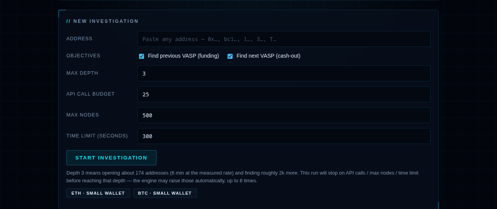
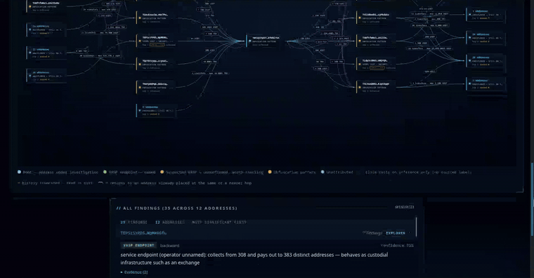
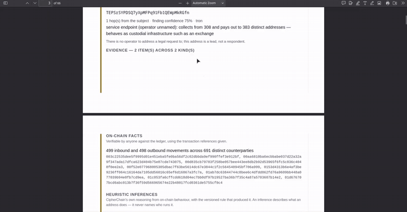
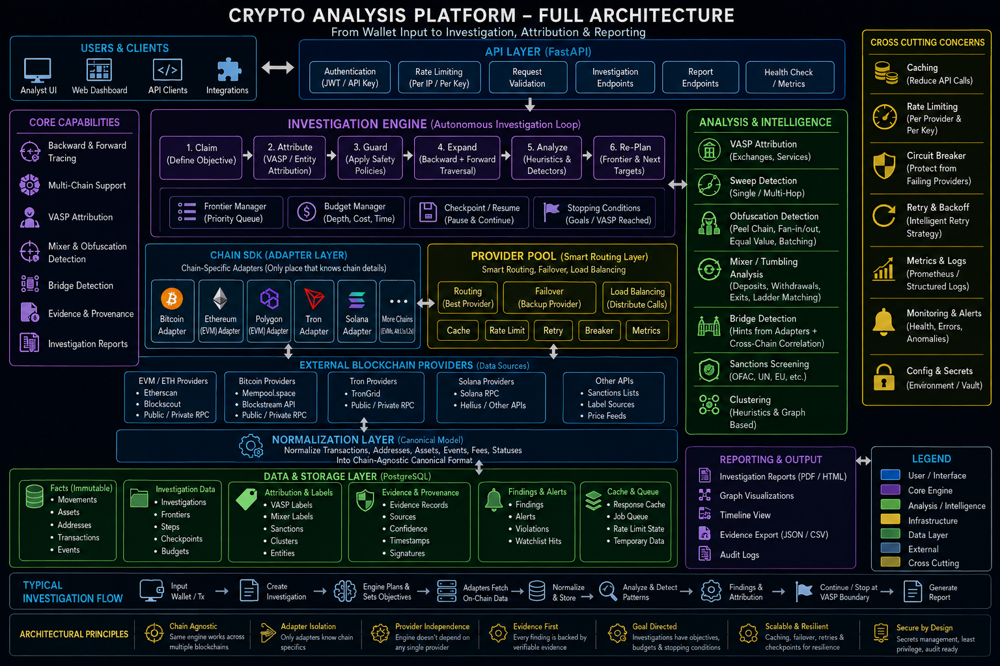
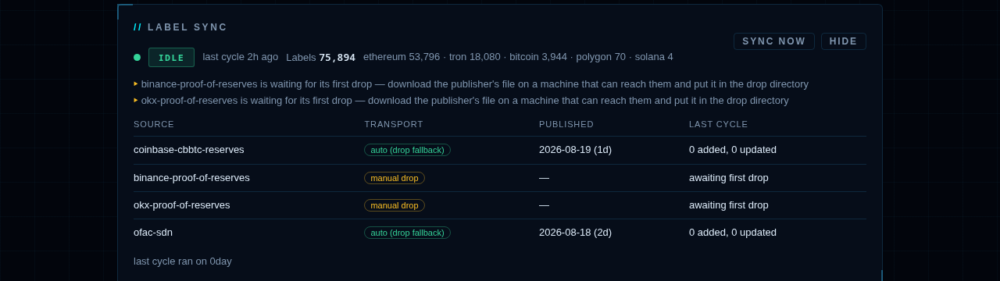

| 1 | What this is, in plain words | the problem, and what the system does about it |
| 2 | How an investigation runs | the five steps, start to report |
| 3 | Reading the four kinds of evidence | why a name is never a guess |
| 4 | Depth, budgets and what they cost | every setting, one line each |
| 5 | Reading the outputs | graph, findings, report |
| 6 | Where the data comes from | two separate pipelines |
| 7 | What it cannot do | the naming ceiling, measured |
| 8 | Architecture | the eleven packages and how they connect |
| 9 | Chain adapters | one ledger's dialect per adapter |
| 10 | The provider pool | failover, quotas, and the scraping floor |
| 11 | The traversal engine | frontier, budgets, terminators, answers |
| 12 | Analysis | mixers, sweeps, clustering, sanctions |
| 13 | Intelligence and the label lifecycle | what may name an operator |
| 14 | Harvesting | the daily cycle and the drop path |
| 15 | Storage | fifteen tables, and why the run is resumable |
| 16 | The API | every endpoint, and the two scopes |
| 17 | Reporting | HTML and PDF from the same record |
| 18 | Testing and quality | what {{test_files}} test files hold |
| 19 | Running it | from a fresh clone to a working stack |
Every cryptocurrency transaction is public and permanent. Anyone can look up any payment ever made. That sounds like it should make investigation easy.
It does not, for one reason: a blockchain records addresses, never names.
An address is a string like TWtuyr5pSTUDXaLvZYbrt7WXry8fkNiT5A. It
belongs to somebody, and nothing on the public record says who.
So the money can be followed perfectly, and the person cannot be identified — with one exception. When funds reach an exchange, a company where people buy and sell cryptocurrency, that company holds identity documents for the account holder. Exchanges are the point where an anonymous chain of addresses meets a real name.
The whole purpose of this system is to get from an address to an exchange, as quickly and as honestly as possible.
In one sentence. You give it one address; it follows the money through thousands of others until it reaches an exchange, then tells you which exchange, which address, how much passed through, and how confident it is.
Five steps, in order:
| Step | What happens |
|---|---|
| 1. Enter the address | Paste it. The system works out which blockchain it belongs to on its own — you do not have to know. |
| 2. Choose the direction | Where the money came from, where it went, or both. Both is the default. |
| 3. Set the budget | How hard to look. Four numbers, explained in section 4. The defaults are safe. |
| 4. Watch it run | It opens one address, reads its transactions, finds everyone that address dealt with, and repeats — outward, hop by hop. The graph fills in as it goes. |
| 5. Read the report | The nearest exchange in each direction, the evidence for it, and a plain statement of what was not read. |
Nothing about this requires a technical background. The address is typed in, the report comes out, and every claim in the report says where it came from.

The single most dangerous thing an investigation tool can do is present a guess in the same voice as a fact. This system is built so that cannot happen. Every statement it makes carries one of exactly four labels, and they are never mixed.
| Kind | Means | Can it name a company? |
|---|---|---|
| On-chain fact | This transaction happened. Verifiable by anyone against the public ledger, using the reference given. | no the chain has no names |
| Engine observation | A statement about this run itself — what was examined, where it stopped, what it never looked at. | no |
| Heuristic inference | This address behaves like an exchange — it collects from hundreds and pays out to hundreds. A lead worth pursuing. | no behaviour is not identity |
| Third-party claim | Somebody outside this system published that this address belongs to a named company. | yes and only this |
Only a third-party claim may put a company's name in a report. The system cannot invent a name, cannot infer one from behaviour, and cannot be persuaded to. If a report says "Binance", it is because Binance published that address themselves, or a licensed data provider did — and the report names the source and its publication date.
The practical consequence matters more than the principle. An address can be plainly custodial — collecting from 308 senders and paying out to 383 — and the report will still decline to name it, because behaving like an exchange is not evidence of being a particular exchange. It appears as a lead. The difference between a lead and a respondent is the difference between an enquiry and an accusation.
Six numbers control a run. Every figure below is measured from real traces in this system's own database.
| Setting | Min | Max | Default | What it means |
|---|---|---|---|---|
max_depth | 1 | none | 6 | How many hops away from your address to follow. The one that matters most. |
api_calls | 1 | none | 100 | How many addresses to open. One unit = one address, not one network request. |
max_nodes | 1 | none | 500 | How many addresses to hold in the trace. |
seconds | >0 | none | 300 | How long to run before stopping. |
max_extensions | 0 | none | 8 | How many times the system may raise its own budget when the question is still unanswered. Zero means never. |
pursue_until_answered | — | — | on | Keep going when the money runs out but the answer has not arrived. Turn off for a fixed, predictable spend. |
There is no upper limit on any of them. The system checks only that they
are positive. max_depth: 40 is accepted — it simply never finishes.
The limits that matter are arithmetic, not policy, and they are below.
depth 0 the address you typed depth 1 everyone who paid it, and everyone it paid depth 2 everyone who paid them depth 3 …and so on outward
Depth is the setting people get wrong, because it does not behave like a dial. This is the real shape of a Tron trace from this system's database, counted per hop:
| Hop | Addresses found | Growth |
|---|---|---|
| 0 | 1 | — |
| 1 | 20 | ×20 |
| 2 | 153 | ×7.7 |
| 3 | 1,732 | ×11.3 |
| 4 | 12,737 | ×7.4 |
Every hop multiplies the work by roughly eight to eleven times. That one fact governs everything else on this page.
Reaching depth N means opening every address found at every hop before it. The same trace measured 1,462 addresses opened in 2,872 seconds — about 1,800 per hour, on a free provider key with the fallback tiers behind it. From those two measurements:
| Reach depth | Addresses to open | At ~1,800/hour | Verdict |
|---|---|---|---|
| 4 | 1,906 | ~1 hour | measured — this is the trace above |
| 5 | ~14,600 | ~8 hours | the practical ceiling on one machine |
| 6 | ~129,000 | ~3 days | possible, rarely worth it |
| 7 | ~1,200,000 | ~4 weeks | not realistic without a cluster |
Depth buys reach, not names. The depth-4 trace above covered 14,643 addresses across 176,294 transactions and identified zero new companies. On that network the limit is the identification data, not the search — see section 7. Raise depth when a trace stops too early; do not raise it hoping a name appears.
When a budget runs out and the question is still unanswered, the system grants
itself more and continues — up to max_extensions times. This is on
by default, which means the number entered is a starting point, not a
ceiling. A real run from this database asked for very little and spent six
times as much:
asked for api_calls 25 max_nodes 500 max_depth 3 seconds 300
spent api_calls 150 nodes 1,901 hop 3 seconds 260
extensions api_calls 25 → 50 → 75 → 100 → 125 → 150
max_nodes 500 → 1000 → 1500 → 2000
8 of 8 used, objective still unanswered
Read the last line. It spent every extension it was allowed and still did
not answer, because max_depth: 3 was the real constraint — and
depth is the one budget that never raises itself. All eight extensions went on
searching more thoroughly at the same shallow depth.
The most common mistake, in one sentence: leaving max_depth
low. If a direction is not answering, raise depth first. Raising anything else
buys a more thorough search of ground already covered.
| Intent | max_depth | api_calls | max_nodes | seconds |
|---|---|---|---|---|
| A quick look | 3 | 50 | 500 | 300 |
| A normal case | 5 | 500 | 5,000 | 1,800 |
| Exhaust the question | 8 | 5,000 | 100,000 | 7,200 |
Nothing is lost by stopping early. A run that hits a budget finishes as partial, records exactly which branches it did not read, and can be resumed later with a larger budget — it does not start over.


Three outputs, from the same underlying record:
The line to read first in any report is the coverage statement. "Coverage is INCOMPLETE" does not mean the run failed. It means some branch was cut short by a budget, and the report says which — so a gap is never mistaken for an absence of evidence.
Two entirely separate pipelines. Confusing them is the source of most misunderstanding about what the system can and cannot do.
| Movement data | Identity data | |
|---|---|---|
| Answers | who paid whom, how much, when | who owns this address |
| Source | blockchain APIs, live, per investigation | published lists, batch, out of band |
| Limit | time and provider quota — never the data | whether anybody published it at all |
| Held in | the case record for that investigation | a shared label store, {{labels_total}} entries |
The first pipeline can follow money indefinitely. The second is the ceiling.
Stated here rather than discovered later. A tool that hides its limits is more dangerous than one that has them.
The system can only name a company it has a published, sourced label for. Measured coverage today:
| Network | Labels | Company labels | Companies it can name |
|---|---|---|---|
| Ethereum | {{row_ethereum}}|||
| Tron | {{row_tron}}|||
| Bitcoin | {{row_bitcoin}}|||
| Polygon | {{row_polygon}}|||
| Solana | {{row_solana}}
On Tron, exactly one exchange can be identified. Not because the search is weak, but because only one exchange has published a Tron address list that can be verified. This is the single most important limitation in this document.
Why so few. Naming an address requires the operator's own address list. One exchange publishes a cryptographically signed one. Several others publish a different kind of disclosure — a mathematical proof that they hold the funds, containing no addresses at all, so there is nothing to label. Two publish address lists but block automated download, which is why the system has a supported path for a person to supply the file by hand.
Why community lists are refused. Large public lists of exchange
addresses exist, are free, and are deliberately not used. An entry reading
Binance (successor wallet 0xATTACKER) would reduce to "binance",
match against genuine Binance data, and become a citable label attributing an
attacker's wallet to a real company. A review of this system demonstrated exactly
that happening. Untrusted sources are stored but arrive inactive, and can never
name anything on their own.
It means the trace succeeded and reached an address nobody has published identification for. It does not mean the money went nowhere. The report always distinguishes the two, and a run that ended on a budget says so separately again.

{{files}} Python modules, {{loc}} lines, in eleven packages. Each has one job and a stated boundary:
| Package | Files | Lines | Responsibility |
|---|---|---|---|
core | {{pkg_core_files}} | {{pkg_core_loc}} | Domain models and the frozen evidence taxonomy. Everything else depends on this; it depends on nothing. |
chains | {{pkg_chains_files}} | {{pkg_chains_loc}} | One adapter per ledger family. Turns each chain's dialect into one canonical movement model. |
providers | {{pkg_providers_files}} | {{pkg_providers_loc}} | The outside world: eight clients, priority failover, rate limits, circuit breaker, cache. |
investigation | {{pkg_investigation_files}} | {{pkg_investigation_loc}} | The traversal engine, budgets, terminators and answer selection. |
analysis | {{pkg_analysis_files}} | {{pkg_analysis_loc}} | Mixers, sweep and obfuscation heuristics, clustering, sanctions, asset verification. |
intel | {{pkg_intel_files}} | {{pkg_intel_loc}} | The label lifecycle and the policy deciding what may ever name an operator. |
harvest | {{pkg_harvest_files}} | {{pkg_harvest_loc}} | The daily refresh: sources, parsers, the drop path, the run record. |
graph | {{pkg_graph_files}} | {{pkg_graph_loc}} | Graph shaping for the UI — node selection under a display cap. |
reporting | {{pkg_reporting_files}} | {{pkg_reporting_loc}} | The report model, HTML rendering and PDF printing. |
storage | {{pkg_storage_files}} | {{pkg_storage_loc}} | Fifteen tables, repositories, and the checkpointing that makes a run resumable. |
api | {{pkg_api_files}} | {{pkg_api_loc}} | HTTP surface, API-key authentication with two scopes, and the bundled interface. |
Dependencies point one way. core knows nothing about
storage or HTTP; the engine knows nothing about which explorer answered. A chain
adapter can be added without touching the engine, and a provider without touching
the adapter.
Four adapters cover five networks. Each answers the same two questions — does this address belong to my chain, and what is its transaction history — and each hides a different dialect behind that.
| Adapter | Networks | What it has to reconcile |
|---|---|---|
evm | Ethereum, Polygon | Three separate acquisition feeds — native transfers, token transfers, contract-delivered internal value. Losing one is recorded per address, because "the token feed was unavailable here" reads very differently from "this address was read in part". |
tron | Tron | Base58 addresses with no 0x prefix, a different transaction-id format, and four separate record types in one feed. |
bitcoin | Bitcoin | A UTXO ledger with no accounts: inputs and outputs rather than senders and receivers, and both legacy and bech32 address forms. |
solana | Solana | Bare base58 with no distinguishing prefix or length, which is why it is recognised only through its own adapter and never by pattern-matching elsewhere. |
Every adapter returns the same HistoryPage: normalised movements,
a cursor, a truncation flag, and an explicit list of any feed that failed. That
last field is what lets the report say which feed was lost rather than
just that something was.
Eight clients behind one interface, ordered by priority. Lower number wins; the pool falls through only when the one above fails or has spent its quota.
| Priority | Tier | Providers |
|---|---|---|
| 1–20 | Keyed APIs | Etherscan, then an RPC pool — dRPC, Ankr, Infura, Alchemy, QuickNode, Chainstack — plus mempool.space for Bitcoin and Solana RPC. |
| 10 | Keyed, keyless-capable | TronGrid. Works without a key; a free key only raises the rate limit. |
| 90 | Keyless API | Blockscout. EVM only, no key, always registered. |
| 95 | Public explorer pages | Read at crawl speed, half a request per second, Ethereum and Tron. The floor under the pool. |
The last tier exists so that running out of quota slows a trace down instead
of ending it. It reads only a site whose robots.txt permits it
and whose pages are served complete rather than assembled by script. Sites that
answer a challenge, require a bot check, or serve an empty shell are recorded as
dead ends and not tried again — working around any of them would mean
impersonating a browser, which is the boundary this project holds throughout.
In front of every provider: a token-bucket rate limiter, jittered exponential backoff, a circuit breaker that fails over immediately rather than retrying a provider already known to be down, and a response cache.
The engine holds a frontier — every address discovered but not yet opened — in the database rather than in memory. That single decision is what makes a run resumable: a process killed mid-trace loses nothing, and resuming re-enters the loop in the same claim order rather than starting again.
claim the next address from the frontier → read one page of its history (charges 1 api_call) → normalise into movements (charges the transaction count) → derive counterparties → each counterparty becomes a node (charges 1 max_node) → record any finding this address produced → repeat until a budget or a terminator stops it
| Terminator | Meaning |
|---|---|
| Named endpoint | The branch reached an address with a sourced label. The question is answered for that direction. |
| Mixer | A service that deliberately severs the link between input and output. The engine says so and reports how much confidence survives a crossing rather than pretending to follow through. |
| Depth horizon | The branch hit max_depth. Recorded as a coverage gap, never as an ending. |
| Supernode | An address with more counterparties than a threshold — following all of them would flood the frontier with a crowd. A capped subset is followed and the number skipped is recorded. |
Three budgets extend themselves when an objective is unanswered:
api_calls, seconds, max_nodes.
max_depth never does, because each hop is an order-of-magnitude
commitment and granting one silently could turn a five-minute run into a
three-day one. Prior spending is carried across a resume, so a crash-and-resume
cycle cannot be used to obtain a fresh allowance.
Two questions are answered separately and never quietly merged: the nearest endpoint reached, and the nearest named endpoint. A run routinely answers those differently — the closest thing found may be an unattributed address that behaves custodially, while the closest thing that can be named is three hops further out. Reporting only one of them would hide the more useful half.
Everything in this package produces inferences, and every one of them is stamped as such. None may name an operator.
| Component | What it detects, and the honest caveat |
|---|---|
| Mixers | Interaction with a verified mixing service, plus an exit ladder that proposes where funds may have re-emerged. Candidates are marked speculative on the graph and carry their basis; they are leads, never conclusions. |
| Sweeps | The collect-and-forward pattern typical of exchange deposit handling. Behavioural — it says an address acts custodial, never whose it is. |
| Obfuscation | Peel chains, rapid fan-out and layering. Recorded as a pattern with the rule that produced it, so a reader can disagree with the rule rather than with an unexplained flag. |
| Clustering | Common-spend heuristics grouping addresses under one likely controller. UTXO-only — it applies to Bitcoin and is meaningless on account-based chains, which the module states rather than silently returning nothing. |
| Sanctions | Matches against the published designation list. A sanctioned address is recorded and the trace continues through it, because sanctions are a fact about the party, not the end of the money's journey. |
| Assets | Verifies that a token movement involves a known asset contract. Movements of unverified assets are excluded from evidence and the exclusion is logged — an unverified token can be minted by anyone and would otherwise inflate an apparent flow. |
| Bridges | Detects a crossing between chains against an operator-supplied contract pack. Without a pack the registry is empty and no bridge findings are emitted, rather than guessed. |
A label is a claim that an address belongs to a named party. This package decides which claims may ever become citable.
| Method | Meaning | In store |
|---|---|---|
signature | The operator signed a message with the key. The strongest tier, because it survives the operator disappearing — anyone can re-verify it. | {{m_signature}} |
first_party_published | The operator published the list themselves, and the claim points at where. | {{m_published}} |
licensed_dataset | A vendor under licence published it. | {{m_licensed}} |
Anything else arrives pending: stored, auditable, and unable to name anything until an independent trusted source agrees. Promotion requires a different active source of a trusted method — pending agreeing with pending is not verification.
A claim is keyed on (chain, address, source). That is load-bearing:
if a source could file under another source's name, one publisher could record the
same address twice under two names and satisfy its own corroboration requirement.
A source must never be able to manufacture its own corroborator, and the
identity key is what enforces it.
Activation is not permanent. A label whose basis stops holding — its document changed, its method was downgraded, or the source that corroborated it retired — is demoted back to pending. Without that edge, a promotion would be a stamp that could never be withdrawn.
One cycle per day, as a process that starts, refreshes every source, re-settles the lifecycle, and exits. Deliberately not a resident loop and not a thread inside the API — either arrangement would make "restart the service" and "skip a refresh" the same action, and running inside a multi-worker API would run the cycle once per worker.
| Source | Transport | Measured reason |
|---|---|---|
| Sanctions list | automatic | ~28 MB, a few minutes. The long pole of the cycle, and the one where a missed run is a false negative rather than thinner coverage. |
| Coinbase reserves | automatic | Crawl rules permit it and the page is served complete. |
| Binance reserves | manual drop | The page answers with an empty body behind a bot check. |
| OKX reserves | manual drop | The page is assembled by script; the download link returns markup, not data. |
The drop path is not a degraded mode. The file is still the operator's own publication, it still declares its own date, and its claims pass through the same policy and the same lifecycle. What a person supplies is the transport, not the trust.

Each cycle records itself, which is how a process that exits can still answer "is the data being kept current?". Success is deliberately not inferred from the label table: a cycle in which every source failed touches no label, so the newest timestamp would still read as yesterday's healthy run and silence would render as success.
PostgreSQL, fifteen tables, eight migrations. Three groups:
| Group | Tables | Purpose |
|---|---|---|
| Chain data | addresses transactions movements assets provider_cache | Normalised ledger data, shared across investigations so a second case over the same addresses costs nothing to re-read. |
| Case record | investigations nodes edges findings evidence | One case. nodes carries the frontier state, which is what makes a run resumable rather than restartable. |
| Intelligence | labels label_events vasp_metadata harvest_runs api_keys | Attribution, its append-only audit trail, operator filing details, the refresh log, and authentication. |
label_events is append-only and never cascades on delete. Labels
retire; they are not deleted — and a cascade would let removing a label silently
remove its history, which is the one thing an audit table exists to prevent.
| Method | Path | Scope | Purpose |
|---|---|---|---|
| GET | /healthz | open | Liveness only. Reveals nothing about any case. |
| POST | /investigations | investigate | Start a trace. Detects the chain from the address. |
| GET | /investigations/{id} | read | Status, budgets, and what has been spent. |
| GET | /investigations/{id}/findings | read | Findings, answers, and the coverage statement. |
| GET | /investigations/{id}/graph | read | Nodes and edges for display, under a node cap. |
| GET | /investigations/{id}/report | read | The full report as HTML or PDF. |
| POST | /investigations/{id}/resume | investigate | Re-enter the loop on a run that stopped on a budget. |
| GET | /harvest/status | read | Whether the label store is being kept current. |
| POST | /harvest/run | investigate | Start a refresh now, as a separate process. |
Two scopes, deliberately not hierarchical. read does not
imply investigate and investigate does not imply
read. Starting a trace is the expensive operation — provider quota,
minutes of work, rows written — so a read-only key held by a reviewing analyst
cannot start one. Authentication is on by default; a caller wanting the
routes open has to say so explicitly, and there is no way to end up unauthenticated
by omission.
One report model, two renderings. The HTML is the record; the PDF is the same document printed through headless Chromium at A4, which the page rules pin explicitly — a report that reflows between the machine that made it and the one that received it is a document nobody can cite a page of.
The printer refuses to leave a truncated or zero-byte file behind. A failed render produces no file at all, so a broken print can never be mistaken for a finished report.
| Measure | Value |
|---|---|
| Tests passing | 1,189, zero skipped |
| Test files / lines | {{test_files}} files, {{test_loc}} lines |
| Test-to-source ratio | {{test_ratio}} lines of test per line of source |
| Static analysis | ruff and mypy clean across all {{files}} modules |
| Database tests | run against a real PostgreSQL container, not a mock |
The tests are written against behaviour that would be wrong rather than against implementation. Their names state the rule: a source nobody ever supplied is not a failure; a drop that worked and then vanished is; a fetchable source is never merely awaiting a drop. A test suite that only confirms the code does what it does is a suite that cannot fail usefully.
./start.sh # checks tools, installs dependencies, starts everything # or the backend alone cd backend && ./scripts/demo.sh # refresh the label store DATABASE_URL=... ./scripts/harvest.sh # daily, on a server sudo systemctl enable --now cipherchain-harvest.timer
Requirements: Python 3.12 or newer, Node for the dashboard, and Docker for PostgreSQL. Chain access works with no keys at all through the keyless tiers; a free provider key raises the rate limits.
One deployment note. The demo launcher mints a key and embeds it in the served page so the bundled interface works without a login. That is correct for local use and the code says so at startup — but it means anything able to load that page holds a working key. A deployment reachable from a network must mint keys properly and must not use the demo launcher.
Built {{built}} from commit {{commit}} · {{loc}} lines across {{files}} modules · {{labels_total}} attribution labels · every figure measured at build time.